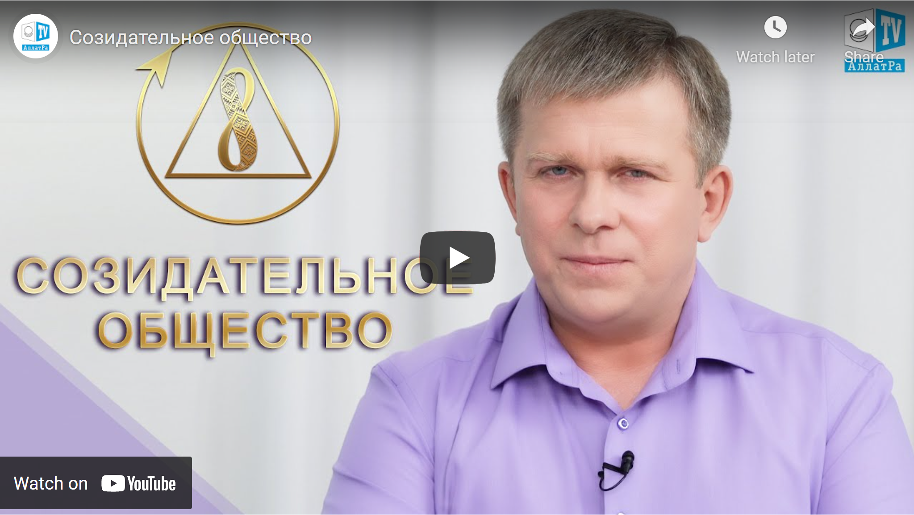

За шаг до идеального общества
 Комментарии (157)
Комментарии (157)
Идеальное общество уже существовало в истории человечества — во времена Гипербореи. Последние 6000 лет происходит упадок цивилизации.
- Как мы живем сейчас и что в наших силах изменить?
- Как перейти от потребительского формата существования к созидательному?
- К чему стремятся все люди?
Текстовая версия передачи “Созидательное общество”. Часть1
Жить прошлым или шагнуть вперед к идеальному обществу?
Татьяна: Здравствуйте, уважаемые друзья! Сегодня в студии АЛЛАТРА ТВ мы побеседуем с уважаемым Игорем Михайловичем Даниловым.
Игорь Михайлович: Здравствуйте!
Татьяна: Игорь Михайлович, к нам поступает очень много вопросов от людей, которые интересуются тем, как жили люди шесть и более тысяч лет назад, до времён шумер. Это и времена Гипербореи, то есть сразу же после Атлантиды. То есть как люди восстанавливались, и каким было это общество. Потому что на сегодняшний день есть очень много примеров того, что это общество жило без войн, без вооружённых конфликтов, без эксплуатации одних людей другими людьми, без нищеты. То есть, по сути, люди жили очень мирно и счастливо.
Игорь Михайлович: Да, первое время это было практически идеальное общество, потом это было уже то, что вот мы сейчас называем созидательным обществом. Это, конечно, интересно. Только вот у меня вопрос к нашим друзьям, вот их это интересует: ребята, а что это вам даст, вот простой пример, знание того, как кто-то жил? Как это поможет вам и как это отразится на жизни ваших детей, ваших внуков, правнуков и тому подобное? Никак. Зачем нам жить прошлым? Давайте строить будущее. Вот что важнее? Вот правда, вот действительно, что важнее: мы будем тратить время, будем разговаривать о том, как когда-то кто-то жил, или мы будем делать сегодня то, что даст жизнь завтра? Зачем нам, скажем, обсуждать, как жили в созидательном обществе когда-то, если мы можем построить его сейчас? Вот что лучше? Ну на мой взгляд… Вообще, как хотите. Есть желание — мы поговорим, не проблема. Но какой коэффициент полезного действия будет от нашего с тобой разговора? Удовлетворим любопытство людей? И они через день забудут об этом. Это никак не изменит их жизнь. Вот правда же. Ну как оно изменит вашу жизнь, друзья мои? Никак.
История цивилизации — от идеального общества к потребительскому существованию

Как мы живем сейчас и что можем изменить?
Как мы живем сейчас и что можем изменить?
Игорь Михайлович: Но мы можем изменить жизнь, и мы можем сделать мир лучше. Разве не так? Вот давай вернёмся к передаче «Истина и плевелы». Ведь мы же там раскрыли основные законы: формирование образа, нашего внимания, силы нашего внимания, его вложения — вот куда мы его вкладываем, то мы и реализуем. Да, сейчас мы разрознены. Ну так устроена система, что мы должны каждый жить, как говорится, своими идеями, своими образами, без единства. Поэтому мы и живём, как звери, 6 000 лет уже, как ты заметила, со времён шумер и до сегодняшнего дня. Но мы же можем всё изменить, и мы можем построить даже идеальное общество, не говоря уже о созидательном. Правильно? Давайте лучше об этом поговорим. Это полезней.

Татьяна: Хорошо, Игорь Михайлович. Я просто, откровенно говоря, готовилась в ключе таком историческом к передаче, о том, как всё-таки это было и как жили люди тогда, поэтому… Но действительно всё-таки правильно Вы говорите. Я вот сейчас понимаю, что вектор нашей беседы немножко меняется уже в другую сторону, в сторону будущего, потому что согласна с Вами в том (Игорь Михайлович: А что ценнее?), что толку от прошлого от этого (Игорь Михайлович: Никакого) действительно нет.
Игорь Михайлович: Прошлое уже ушло, и сейчас мы будем говорить о том, чего нет. Или мы будем говорить о том, что может быть. И от нас зависит — будет это или нет. Что лучше?
Татьяна: Хорошо. Ну у меня есть 8 Основ Созидательного общества тогда.
Игорь Михайлович: Ну вот видишь.
Что такое Созидательное общество и за сколько лет его можно построить?
Татьяна: Игорь Михайлович, прежде чем перейти к 8 Основам, хотелось бы узнать вот о чём: а что такое вообще созидательное общество? Как его Вы видите? То есть на кого ориентировано это общество?
Игорь Михайлович: На человека. Созидательное общество, вот на мой взгляд… Конечно, сколько людей, столько и мнений, но опять-таки созидательное общество, оно просто, оно очень комфортно и удобно для человека. Почему? Потому что оно ориентировано на блага и свободы человека. И вот в этом весь смысл созидательного общества. Там нет лжи, нет обмана, и самое главное — нет власти, потому что вся власть у человека. Нет надстроек над ним — в этом смысл. И вот смотри, сколько происходит у нас войн, революций, всяких бунтов людских. И всегда что мы ищем? Из-за чего мы вот встаём друг против друга?

Татьяна: В поисках счастья, в поисках идеального общества, свободы.
Игорь Михайлович: Свободы и всего остального. А что мы строим? То же самое. Вот говорят: убить дракона нельзя (Татьяна: Теми же методами). Побеждая дракона, сам становишься драконом. Почему? Вот простой вопрос. Потому что сам потребительский формат диктует этот сценарий. Правильно? Вот люди делают революцию, к примеру, они стремятся к лучшему, народ поднимается. К власти приходят такие же тираны, которые опять манипулируют так же нами же, и мы не получаем ничего. Почему? Потому что такой закон потребительского строя. Вот каким он сформирован, таким он и будет, потому что мы остаёмся разрознены, у нас остаются свои интересы, и самое главное — мы живём по праву зверей. То есть вот как звери, так и мы поступаем друг к другу. Ну хотя у нас есть прописанные законы: вот ООН там создаёт, другие организации, — как мы должны жить, вот они декларируют. Но все эти декларации не работают. Почему? Потому что доминирует потребительский формат, то есть бесчеловечный формат по отношению одного человека к другому. Можно это изменить? Легко, друзья мои. Всё зависит от нас. И опять мы возвращаемся к чему? К единству нашего внимания, куда мы вкладываем его все вместе. Если мы хотим жить хорошо, если мы хотим жить достойно человека, значит, вот в это мы и должны вкладывать наше внимание, то есть наше время, наши силы на построение будущего для себя и, скажем так, для наших детей и потомков.

И вот если подойти на сегодняшний день, то в действительности построить созидательное общество очень легко. Я скажу так: если мы действительно этого захотим, и все, кто понял весь смысл и суть самого созидательного общества, о котором мы сейчас поговорим, то построить его реально за 10 лет. Вот 10 лет — и мы будем жить в этом созидательном обществе. Но опять-таки это зависит от людей, от их желаний, их стремлений. Если ничего не делать и уповать на кого-то, что вот кто-то возьмёт и сделает, — оно не построится, потому что созидательное общество, оно как раз и есть дело всех людей. Это не просто дело, скажем, каких-то идейных товарищей, которые должны что-то кому-то сделать, а это дело всех и каждого, это наше дело. Правильно?
Татьяна: Да.
Игорь Михайлович: Вот в этом и смысл. И все вместе тогда мы это сделаем.
Кто против счастливых людей, тот выступает против всего человечества
Игорь Михайлович: В любом случае найдутся социопаты, то есть, скажем так, враги человечества, которые станут на пути созидательного общества. Почему? Ну во-первых, будут рушиться их планы на создание своей империи, на то, что они могут царствовать, и им народ будет служить, как рабы. Ну есть такие больные люди. Да это даже нелюди, людьми их назвать нельзя. Если человек выступает против человечества в угоду своим личным амбициям и желаниям, он утрачивает статус Человека. Он уже не Человек, он зверь. Он уже настолько же опасен, как, извините, опасно больное животное. Вот, к примеру, бешеная собака: она полезна или опасна для человечества? Можно ли её выпускать там, где находятся люди? (Татьяна: Конечно нет) Вот люди в парке отдыхают, а мы выпускаем туда больное, нездоровое животное, например, такое как доберман или бультерьер, заражённый бешенством, в стадии агрессии. И мы его выпускаем. Это хорошее действие или плохое?
Татьяна: Конечно плохое.
Игорь Михайлович: А что нужно сделать?
Татьяна: Изолировать, естественно, конечно.
Игорь Михайлович: Чтобы не нанесло вред людям. И вот любой, кто выступает против созидательного общества, то есть направленно против человека, он отличается чем-то от этого больного животного? Вот честно. А вот над этим стоит подумать. Ведь ни один нормальный здравый человек никогда не выступит против созидательного общества. Почему? Объясняем. Вот, к примеру, бешеная собака: она полезна или опасна для человечества? Можно ли её выпускать там, где находятся люди? (Татьяна: Конечно нет) Вот люди в парке отдыхают, а мы выпускаем туда больное, нездоровое животное, например, такое как доберман или бультерьер, заражённый бешенством, в стадии агрессии. И мы его выпускаем. Это хорошее действие или плохое? Что такое созидательное общество? Оно было, вот как ты говоришь, ещё и 6 000 лет назад. Ну 6 000 лет назад оно закончило существование своё, скажем. Не будем возвращаться, мы об этом уже рассказывали, как оно, что произошло и почему идеальное общество перешло в созидательное. Такой вот процесс деградации произошёл. А потом созидательное общество перешло в такой вот потребительский формат, где человек человеку волк. Мы об этом уже рассказывали.

Чего хотят все люди?
Игорь Михайлович: Давай поговорим о том, что такое вот в действительности на сегодняшний день созидательное общество. Это то, чего хотят все люди. И вот мы проводили массу опросов на протяжении уже нескольких лет по всему миру. И все люди откровенно говорят одно и то же, что они хотят жить в мире, они хотят жить в любви, взаимоуважении, в свободе. Они не хотят, чтобы над ними были какие-то надстройки, которые ими управляют. Что подразумевается под этими надстройками? Когда малая группа людей, скажем так, узурпирует все права и блага всего человечества или тех людей, которые их избрали. И вот это нежелание, скажем, жить в потребительском формате, оно у них выражается в желании жить одной семьёй, в свободе. И вот здесь подразумевается: что значит свобода? Ведь свобода… Ну скажем, давай посмотрим в историю, на сегодняшний день: вот все борются за свободу, за какие-то права и свободы. А за какие права и свободы борются люди в действительности? А вот как раз за созидательное общество: там, где все равны и где все свободны, там, где нет преступности.